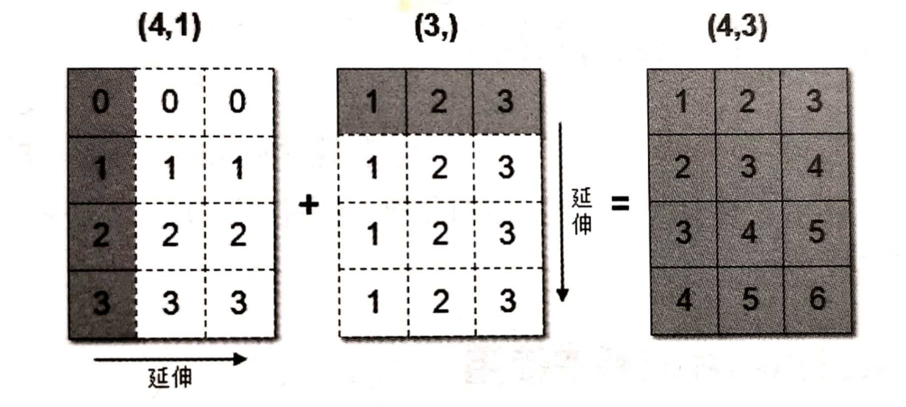

数据分析三件套（NumPy、Pandas、Matplotlib）从这一讲开始。先把开发环境搭稳——Anaconda 管环境、Jupyter Notebook 写代码，然后进入 NumPy：理解 ndarray 为什么快，掌握数组的创建、索引、变形、运算和广播机制。NumPy 是 Pandas 的底层依赖，这一讲的功底直接决定后面学 Pandas 的顺畅程度。
本讲代码建议在 Jupyter Notebook 中逐格执行，观察每一步的输出。
一、为什么用 Python 做数据分析
Python 可以独立完成数据分析的各种任务：数据分析领域有海量开源库，同时也是机器学习/深度学习领域最热门的语言，在爬虫、Web 开发等领域均有应用。
与 Excel、PowerBI、Tableau 等软件相比：
- Excel 有百万行数据的限制，数据量大时严重卡顿；
- PowerBI、Tableau 处理大数据时速度相对较慢，且都需要付费授权；
- Python 功能更强大、免费、跨平台（Windows / macOS / Linux 都能跑）。
与 R 语言相比：Python 处理海量数据效率更高，工程化能力更强；在非结构化数据（文本、图像）和深度学习领域更有优势；开源社区中 Python 相关内容也远多于 R。
常用的数据分析开源库：
| 库 | 定位 |
|---|---|
| NumPy | 数组计算的数学库：N 维数组 ndarray、广播函数、线性代数/傅里叶变换/随机数 |
| Pandas | 结构化数据分析工具集，基于 NumPy，提供数据清洗、挖掘、分析能力 |
| Matplotlib | 使用最广的绘图库，可创建静态、动态和交互式图表 |
| Seaborn | 建立在 Matplotlib 之上、集成 Pandas 数据结构，API 更简洁，图更好看 |
| Scikit-learn (sklearn) | 基于 NumPy/SciPy/Matplotlib 的机器学习工具 |
| Jupyter Notebook / JupyterLab | 数据分析首选开发环境：代码、公式、图表、笔记共存 |
二、Anaconda：环境与包管理
1. 为什么需要 Anaconda
直接从官网装 Python 解释器也能用，但有个现实问题：不同项目使用的 Python 版本不同（例如一个项目用 3.8、另一个用 3.12），各版本兼容的第三方包版本也不一样。如果只有一套本地环境，切换项目就要频繁装卸包，非常痛苦。
Anaconda 是最流行的数据科学 Python 发行版，两个核心能力正好解决这个问题：
- 预装了科学计算库：NumPy、Pandas、Matplotlib、sklearn 等开箱即用；
- 强大的环境管理工具 conda：为不同项目创建相互隔离的 Python 虚拟环境，彻底解决包版本冲突。
安装：官网下载对应平台安装包，一路下一步即可；即使电脑上已装 Python 也互不影响。
2. conda 虚拟环境常用命令
# 查看虚拟环境列表 conda env list # 创建虚拟环境（python 版本按需指定：3.8 / 3.10 / 3.12...） conda create --name data_analysis python=3.10 # 激活（进入）环境 conda activate data_analysis # 在环境中安装包（conda 或 pip 均可） conda install numpy pandas matplotlib pip install numpy # 退出当前虚拟环境 conda deactivate # 删除虚拟环境 conda remove -n data_analysis --all
pip 安装建议指定国内镜像源加速，例如清华源：
pip install 包名 -i https://pypi.tuna.tsinghua.edu.cn/simple/常用的还有阿里云https://mirrors.aliyun.com/pypi/simple/、中科大http://pypi.mirrors.ustc.edu.cn/simple/。
三、Jupyter Notebook 的使用
Jupyter Notebook 是一个开源 Web 应用，可以创建和共享包含代码、公式、可视化图表与笔记的文档（扩展名 .ipynb），适用于数据清理转换、数值模拟、统计分析、可视化、机器学习等场景。
启动：从 Anaconda 图形界面启动，或在终端中：
conda activate 虚拟环境名 jupyter notebook
核心概念 cell：代码的输入框和输出结果显示区就是一个 cell。cell 行号前出现 * 表示代码正在运行。
常用快捷键（重点记忆）：
| 模式 | 快捷键 | 作用 |
|---|---|---|
| 通用 | Shift + Enter |
执行本单元代码，并跳到下一单元 |
| 通用 | Ctrl + Enter |
执行本单元代码，留在本单元 |
命令模式（按 Esc 进入） |
Y / M |
cell 切换为 Code / Markdown 模式 |
| 命令模式 | A / B |
在当前 cell 上方 / 下方新增 cell |
| 命令模式 | 连按两次 D |
删除当前 cell |
编辑模式（按 Enter 进入） |
Tab |
变量、方法名补全 |
| 编辑模式 | Ctrl + / |
添加/取消注释 |
| 编辑模式 | Ctrl + Z / Ctrl + Y |
回退 / 重做（Mac 用 Cmd） |
Markdown 模式（命令模式按 M）下可以用 Markdown 语法在代码之间穿插格式化的说明文字，重点掌握标题与缩进的写法。
四、NumPy 与 ndarray 的优势
1. NumPy 是什么
NumPy（Numerical Python）是一个开源的 Python 科学计算库，用于快速处理任意维度的数组，支持常见的数组和矩阵操作。它是其它科学计算包（包括 Pandas）的基础包，核心功能：
- 高性能科学计算和数据分析的基础包；
- ndarray 多维数组：矢量运算能力，快速、节省空间；
- 矩阵运算无需循环，可完成类似 MATLAB 的矢量运算；
- 提供读写磁盘数据、操作内存映射文件的工具。
NumPy 用 ndarray（N-dimensional array） 对象处理多维数组：它描述了相同类型元素的集合，下标从 0 开始。
import numpy as np # 用 ndarray 存储 8 名学生 5 门课的成绩 score = np.array( [[80, 89, 86, 67, 79], [78, 97, 89, 67, 81], [90, 94, 78, 67, 74], [91, 91, 90, 67, 69], [76, 87, 75, 67, 86], [70, 79, 84, 67, 84], [94, 92, 93, 67, 64], [86, 85, 83, 67, 80]])
2. ndarray 和 list 的效率对比
Python 列表也能存多维数据，为什么还要 ndarray？跑一个亿级求和的对比：
import random import time import numpy as np a = [] for i in range(100000000): a.append(random.random()) # %time 是 Jupyter 魔法方法, 查看当前行代码运行一次所花费的时间 %time sum1 = sum(a) # 纯 Python: 约 1.1 s b = np.array(a) %time sum2 = np.sum(b) # NumPy: 约 0.13 s
数组越大，NumPy 的优势越明显。机器学习的最大特点就是大量的数据运算，没有高效的计算方案，Python 无法在这个领域立足。
3. ndarray 为什么快
- 内存块风格（一体式存储）：ndarray 中所有元素类型相同，数据在内存中连续存储，批量操作更快；而 Python 列表元素类型任意（分离式存储），只能通过寻址方式找到下一个元素。代价是 ndarray 通用性不及 list；
- 向量化运算：把循环交给编译后的底层实现；矩阵乘法等操作所调用的 BLAS 库还可能使用多核，但并非所有 NumPy 运算都会自动并行；
- 底层是 C 语言实现，内部解除了 GIL（全局解释器锁），运算不受 Python 解释器限制。
五、ndarray 的属性与数据类型
1. 基本属性
| 属性 | 含义 |
|---|---|
ndarray.shape |
数组维度的元组 |
ndarray.ndim |
数组维数 |
ndarray.size |
数组中的元素数量 |
ndarray.itemsize |
单个元素的长度（字节） |
ndarray.dtype |
数组元素的类型 |
理解 shape：
a = np.array([[1, 2, 3], [4, 5, 6]]) # a.shape → (2, 3) 二维 b = np.array([1, 2, 3, 4]) # b.shape → (4,) 一维 c = np.array([[[1, 2, 3], [4, 5, 6]], [[1, 2, 3], [4, 5, 6]]]) # c.shape → (2, 2, 3) 三维
2. 数据类型（dtype）
常用类型：浮点数通常默认 float64；Python 整数转换成的默认整数宽度与平台有关，不能在跨平台文件格式中想当然地写成 int64。
| 类型 | 说明 | 简写 |
|---|---|---|
| np.int8 / int16 / int32 / int64 | 有符号整数（1/2/4/8 字节） | 'i' / 'i2' / 'i4' / 'i8' |
| np.uint8 ~ uint64 | 无符号整数 | 'u' ~ 'u8' |
| np.float16 / float32 / float64 | 半精度 / 单精度 / 双精度浮点 | 'f2' / 'f4' / 'f8' |
| np.bool_ | 布尔（True / False） | 'b' |
| np.bytes_ / np.str_ | 定长字节串 / Unicode 字符串 | 'S' / 'U' |
| np.object_ | 任意 Python 对象 | 'O' |
| np.complex64 / complex128 | 复数 | 'c8' / 'c16' |
S/np.bytes_存的是原始字节，必须知道编码才能解码；U/np.str_存 Unicode 文本。处理复杂文本、可变长字符串和缺失值时，Pandas 往往更合适。
创建时指定类型，或用 astype 转换：
a = np.array([[1, 2, 3], [4, 5, 6]], dtype=np.float32) a.dtype # dtype('float32') arr = np.array(['python', 'tensorflow', 'scikit-learn', 'numpy'], dtype=np.str_)
六、创建数组的各种方法
1. 生成 0 和 1 的数组
np.ones([4, 8]) # 4行8列, 全1 np.zeros([3, 4]) # 3行4列, 全0 np.ones_like(a) # 形状与 a 相同的全1数组 np.zeros_like(a) # 形状与 a 相同的全0数组
2. 从现有数组生成：array 与 asarray
a = np.array([[1, 2, 3], [4, 5, 6]]) a1 = np.array(a) # 默认 copy=True：真正创建新数组 a2 = np.asarray(a) # dtype/order 已兼容时尽量不复制，否则仍可能复制
在这个例子中，修改 a 后 a1 不变，a2 会跟着变；但不要把 asarray 简化成“永远浅拷贝”，是否复制取决于输入对象、dtype 和内存布局。
3. 生成固定范围的数组
# linspace(start, stop, num): 等差数组 —— 指定数量, 默认50个, 默认包含终点(endpoint=True) np.linspace(0, 100, 11) # array([0., 10., 20., ..., 100.]) 元素是浮点型 # arange(start, stop, step): 等差数组 —— 指定步长(类似 range, 不含终点) np.arange(10, 50, 2) # array([10, 12, 14, ..., 48]) # logspace(start, stop, num): 等比数列, 起止点是 10 的幂; base 参数可改底数 np.logspace(0, 2, 3) # array([1., 10., 100.]) np.logspace(0, 9, 10, base=2) # 以2为底: 1, 2, 4, ..., 512
4. 生成随机数组
np.random.rand() # [0.0, 1.0) 均匀分布随机浮点数 np.random.rand(3, 2) # 3行2列 均匀分布数组 np.random.uniform(0, 1, 100) # 指定区间的均匀分布 np.random.randint(1, 100, size=(4, 3)) # [1, 100) 随机整数数组 np.random.randn(4) # 标准正态分布 np.random.normal(0, 1, 100) # 正态分布: 均值u决定图形左右位置, 标准差σ决定瘦高/矮胖
七、索引与切片
规则：先行后列，对象[行, 列]，每个维度都支持切片。
arr = np.array([[1, 2, 3, 4], [5, 6, 7, 8], [9, 10, 11, 12]]) arr[0, 1] # 第1行第2列 → 2（下标从0开始） arr[0:2, :] # 前2行的所有列 arr[:, 1:3] # 所有行的第2~3列 arr[0, 1:3] # 第1行的第2~3列 → [2, 3] # 三维数组: [层, 行, 列] a1 = np.array([[[1, 2, 3], [4, 5, 6]], [[12, 3, 34], [5, 6, 7]]]) a1[0, 0, 1] # → 2
八、形状与类型修改
arr = np.array([1, 2, 3, 4, 5, 6, 7, 8, 9]) # 1. reshape(shape): 元素总数必须一致；能共享内存时返回视图，否则可能复制 arr.reshape(3, 3) # 2. ndarray.resize(new_shape): 原地改数组；np.resize(a, shape) 则返回新数组并可能循环补齐 arr.resize((3, 3)) np.resize(arr, (2, 5)) # 3. T: 转置, 行列互换 a = np.array([[1, 2, 3], [4, 5, 6]]) a.T # shape 从 (2,3) 变 (3,2) # 4. astype(type): 返回修改类型后的新数组 np.array([1.1, 2.2, 3.3]).astype(np.int32) # 5. tobytes(): 把数组转成 Python 字节串(二进制), 方便网络传输 a.tobytes() # 6. 去重: np.unique() —— 找到唯一值并返回排序结果, 类似 Python 的 set temp = np.array([[1, 2, 3, 4], [3, 4, 5, 6]]) np.unique(temp) # array([1, 2, 3, 4, 5, 6])
三个形状方法的对比记忆：reshape 返回新对象且尽量共享数据；ndarray.resize 原地改自身；np.resize 返回新数组并可能循环补齐；T 交换二维数组的行列轴。
九、逻辑运算与统计运算
1. 逻辑判断与布尔索引
# 生成10名同学5门课的成绩 score = np.random.randint(40, 100, (10, 5)) test_score = score[6:, 0:5] # 取后4名同学 test_score > 60 # 返回同形状的布尔数组 test_score[test_score > 60] = 1 # 布尔索引: 把满足条件的元素统一赋值
2. 通用判断函数
np.all(score[0:2, :] > 60) # 所有元素都满足条件才 True → 判断前两名是否全及格 np.any(score[0:2, :] > 80) # 有一个满足即 True → 判断前两名是否有80分以上
3. np.where 三元运算符
np.where(condition, x, y) 相当于对每个元素做 x if condition else y：
temp = score[:4, :4] np.where(temp > 60, 1, 0) # 大于60记1, 否则记0 # 复合条件要用 np.logical_and / np.logical_or np.where(np.logical_and(temp > 60, temp < 90), 1, 0) np.where(np.logical_or(temp > 90, temp < 60), 1, 0)
4. 统计运算与 axis
常用统计指标：min、max、median（中位数）、mean（均值）、std（标准差）、var（方差）。方差/标准差衡量数据偏离均值的分散程度——值越大数据越分散。
axis 的记忆方法：axis=0 沿着列统计（跨行操作，结果是"每一列"的统计值）；axis=1 沿着行统计（跨列操作）。
temp = score[:4, 0:5] np.max(temp, axis=0) # 各科成绩的最大分 np.min(temp, axis=0) # 各科成绩的最小分 np.std(temp, axis=0) # 各科成绩的波动情况 np.mean(temp, axis=0) # 各科成绩的平均分 # 最值对应的下标: argmax / argmin np.argmax(temp, axis=0) # 各科最高分对应的学生下标
5. 其它常用内置函数
np.ceil(arr) # 向上取整 np.floor(arr) # 向下取整 np.rint(arr) # 四舍五入 np.abs(arr) # 绝对值 np.isnan(arr) # 判断是否为 NaN np.multiply(a, b) # 元素相乘 np.divide(a, b) # 元素相除 np.cumsum(arr) # 累加和 np.cumprod(arr) # 累乘积 np.sort(arr) # 排序
十、数组间运算与广播机制
1. 数组与数的运算
NumPy 是每个元素单独运算，这与列表的整体操作完全不同：
arr = np.array([[1, 2, 3, 2, 1, 4], [5, 6, 1, 2, 3, 1]]) arr + 1 # 每个元素都 +1 arr / 2 # 每个元素都 /2 # 对比: Python 列表的 * 是整体复制 a = [1, 2, 3, 4, 5] a * 3 # 列表重复3次, 而不是每个元素乘3
2. 广播机制
数组间做矢量化运算时要求形状相等；形状不等时触发广播机制——自动扩展数组使 shape 一致后再运算。
arr1 = np.array([[0], [1], [2], [3]]) # shape (4, 1) arr2 = np.array([1, 2, 3]) # shape (3,) arr1 + arr2 # 两者都被扩展成 (4, 3) 再相加 # array([[1, 2, 3], # [2, 3, 4], # [3, 4, 5], # [4, 5, 6]])

广播的三条规则：
- 维度数不同时，把维度少的数组在前面补 1，补齐到相同维度数；
- 从最后一个维度开始比较：长度相同、或其中一方长度为 1，则该维度兼容；
- 任何一个维度上长度既不同又都不为 1，则无法广播，运算报错。
例如 (2, 6) 与 (2, 4) 不能运算（最后一维 6≠4 且都不是 1）；(2, 6) 与 (2, 1) 可以（后者沿列广播）。
3. 矩阵乘法：逐元素乘 vs 点乘
A = np.array([[1, 2], [3, 4]]) B = np.array([[5, 6], [7, 8]]) A * B # 逐元素相乘 (element-wise): [[5, 12], [21, 32]] A.dot(B) # 矩阵乘法(线性代数点乘): [[19, 22], [43, 50]] A @ B # @ 运算符, 等价于 dot
十一、NumPy 实战：归一化、标准化与矢量化
数据预处理中最常用的两种缩放，公式都能用 NumPy 一行写出：
arr = np.array([10, 20, 30, 40, 50]) # 归一化: 缩放到 [0, 1], 公式 (x - min) / (max - min) (arr - arr.min()) / (arr.max() - arr.min()) # 标准化: 缩放到 均值0、方差1, 公式 (x - mean) / std (arr - arr.mean()) / arr.std()
| 对比项 | 归一化 | 标准化 |
|---|---|---|
| 结果 | 数据落在 0~1 之间，不改变分布 | 均值 0、方差 1，改变分布 |
| 对异常值 | 非常敏感（最大最小值易被异常值带偏） | 相对稳健 |
| 适用场景 | 对输出范围有要求的模型（如神经网络）、图像像素处理、无明显边界的数据 | 数据有异常值、近似正态分布、逻辑回归/SVM/PCA 等算法 |
循环 vs 矢量化：对千万级元素的数组，[x * 2 for x in arr] 的列表推导比 arr * 2 的矢量化写法慢一个数量级以上——能用 NumPy 运算符解决的，不要写 Python 循环。
十二、dtype 对象、类型转换与结构化数组
1. dtype 不只是类型名
dtype 决定元素的二进制表示、每个元素占用的字节数以及 NumPy 如何解释这段内存。常用属性：
arr = np.array([1, 2, 3], dtype=np.int32) arr.dtype.name # 'int32' arr.dtype.type # 对应的 NumPy 标量类型 arr.dtype.itemsize # 4，每个元素 4 字节 arr.dtype.kind # 'i'，表示有符号整数 arr.dtype.byteorder # 字节序：'=' 本机、'<' 小端、'>' 大端
从文件、网络或数据库读取二进制数据时，类型宽度和字节序必须匹配，否则“能读出来”也可能是错误数值。
2. 类型提升与安全转换
混合类型运算时 NumPy 会寻找共同类型，例如整数加浮点数通常得到浮点数组。需要主动检查能否安全转换：
np.result_type(np.int16, np.float32) # 推断共同 dtype np.can_cast(np.int16, np.int32, casting='safe') # True np.can_cast(np.float64, np.int32, casting='safe') # False x = np.array([1.9, -2.1, 300.0]) x.astype(np.int32) # [1, -2, 300]：向 0 截断，不是四舍五入
从大类型转小类型可能溢出，从浮点转整数会丢小数，布尔转换则按“零为 False、非零为 True”。如果业务需要四舍五入，应先 np.rint；如果要限制范围，应先 np.clip，不能把 astype 当数据清洗。
3. 自定义 dtype 与结构化数组
结构化 dtype 类似一张定长记录表，每个元素可以包含多个具名字段：
student_dtype = np.dtype([ ('name', 'U16'), ('age', np.int16), ('height', np.float32), ]) students = np.array([ ('张三', 25, 175.5), ('李四', 30, 180.0), ], dtype=student_dtype) students['name'] # 按字段访问 students['height'] students.dtype.names # ('name', 'age', 'height') students.dtype.fields
结构化数组适合定长二进制记录、科学文件格式或与 C 结构体互操作。一般业务表格包含缺失值、可变长文本和复杂分组时，Pandas DataFrame 更方便。定义字段时还要关注对齐、字段宽度和截断风险。
十三、高级索引：布尔、花式与视图/副本
1. 花式索引
使用整数数组一次选取多个不连续位置，称为花式索引：
arr = np.array([10, 20, 30, 40, 50]) arr[[1, 3, 4]] # [20, 40, 50] arr[[4, 1, 1]] # 可以倒序、重复取值 matrix = np.array([[1, 2, 3], [4, 5, 6], [7, 8, 9]]) matrix[[0, 2], [1, 2]] # 配对坐标 (0,1)、(2,2) → [2, 9] matrix[np.ix_([0, 2], [1, 2])] # 行列笛卡尔积 → [[2,3],[8,9]] matrix[1:, [0, 2]] # 与切片组合
二维花式索引最容易混淆：两个一维索引数组直接放在一起是“逐对坐标”，np.ix_ 才是选中行与列的全部组合。
2. 视图与副本
base = np.arange(8) slice_view = base[2:6] # 基本切片通常是视图 fancy_copy = base[[2, 3, 4, 5]] # 花式索引返回副本 bool_copy = base[base > 3] # 布尔索引返回副本 np.shares_memory(base, slice_view) # True np.shares_memory(base, fancy_copy) # False
修改视图可能回写原数组；花式/布尔索引取得的结果通常不会。但 base[[1, 3]] = 99 仍能修改原数组，因为这是“索引赋值”，不是先把结果保存成副本再改。需要明确独立数据时调用 .copy()。
十四、轴变换、扁平化与数组重组
1. 转置与轴置换
二维数组的 .T 交换行列；高维数组的转置本质是重新排列全部轴：
x = np.arange(24).reshape(2, 3, 4) x.T.shape # (4, 3, 2)，轴顺序完全反转 x.transpose(1, 0, 2).shape # (3, 2, 4)，显式指定新轴顺序 np.swapaxes(x, 0, 1).shape # (3, 2, 4)，只交换两个轴 np.moveaxis(x, -1, 0).shape # (4, 2, 3)，把最后一轴移到最前
2. reshape、flatten、ravel、squeeze
x2 = np.arange(12).reshape(3, 4) x2.reshape(2, 6) # -1 可让 NumPy 自动推断某一维 x2.reshape(2, -1) x2.flatten() # 总是返回一维副本 x2.ravel() # 尽量返回一维视图，必要时仍会复制 x2[:, :, None] # 新增长度为 1 的轴 np.expand_dims(x2, axis=0) np.squeeze(x2[None, ...]) # 只移除长度为 1 的轴
reshape 是否共享内存取决于连续性与内存顺序，不能假设永远是视图。若后续修改是否应该影响原数组很重要，用 np.shares_memory 验证。
3. 拼接与堆叠
a = np.array([[1, 2], [3, 4]]) b = np.array([[5, 6], [7, 8]]) np.concatenate([a, b], axis=0) # 按行拼，等价于 vstack np.concatenate([a, b], axis=1) # 按列拼，等价于 hstack np.vstack([a, b]) np.hstack([a, b]) np.stack([a, b], axis=0) # 新增一个轴，shape (2, 2, 2) np.column_stack([a[:, 0], b[:, 0]])
concatenate 沿已有轴连接，除拼接轴外其它维度必须相同；stack 会新增轴，因此所有输入形状必须完全相同。拼接通常会分配新内存。
4. 分割
matrix = np.arange(24).reshape(4, 6) np.hsplit(matrix, 3) # 沿列均分为 3 份 np.vsplit(matrix, 2) # 沿行均分为 2 份 np.split(matrix, [1, 3], axis=0) # 在行索引 1、3 处分段 np.array_split(np.arange(10), 3) # 不能整除时尽量均匀分
split 的等份数必须整除相应轴长度；array_split 允许不均匀分割。分割结果通常与原数组共享内存，修改前要确认是否需要 .copy()。
十五、内存、容器互转与字符串数组
1. 看懂数组的内存布局
除了 shape / ndim / size / itemsize / dtype，还应检查：
arr = np.arange(12, dtype=np.int32).reshape(3, 4) arr.nbytes # 总数据区字节数 = size * itemsize arr.strides # 每个轴前进一步要跨过多少字节 arr.flags # C/F 连续、是否拥有数据、是否可写等 arr.base # 若为视图，常指向底层对象 arr.T.strides # 转置通常只改变步长，不复制数据 arr.T.flags['C_CONTIGUOUS']
float32 的内存通常是 float64 的一半，但精度也更低；缩小 dtype 前应根据数值范围与误差容忍度决定，而不是一味省内存。
2. Python 列表与数组互转
python_list = [[1, 2, 3], [4, 5, 6]] numpy_array = np.asarray(python_list) back_to_list = numpy_array.tolist() # 多维数组变成嵌套列表
NumPy 数组要求规则形状和统一 dtype；不规则嵌套列表不应硬转成数值数组。需要灵活对象时可用 dtype=object，但会失去大部分连续内存和向量化优势。
3. 字符串、字节与编码
text = np.array(['你好', '世界', 'Python', '数据分析'], dtype='U8') np.char.add(text[:2], '!') np.char.replace(text, 'Python', '编程') np.char.find(text, '数') np.char.str_len(text) raw = np.array([b'hello', '世界'.encode('utf-8')], dtype=object) decoded = np.array([item.decode('utf-8') for item in raw])
U8 是最多 8 个 Unicode 字符的定长字段，超长文本会被截断；S8 是最多 8 字节，中文 UTF-8 一个字符常占多个字节。编码和解码必须使用同一字符集。NumPy 字符串数组适合规则批处理，复杂文本清洗更适合 Pandas 的 .str 接口。
十六、NumPy 小项目：股票价格初步分析
下面把创建、切片、统计、条件逻辑和趋势拟合串成一个最小闭环：
import numpy as np prices = np.array([100, 101, 102, 103, 102, 101, 100, 98, 97, 96], dtype=float) # 1. 水平与波动 mean_price = prices.mean() volatility = prices.std(ddof=1) # 2. 日收益率：长度比价格少 1 returns = np.diff(prices) / prices[:-1] positive_days = np.count_nonzero(returns > 0) # 3. 三日简单移动平均 sma3 = np.convolve(prices, np.ones(3) / 3, mode='valid') # 4. 一次趋势线 x = np.arange(prices.size) slope, intercept = np.polyfit(x, prices, 1) trend = slope * x + intercept # 5. 最近三天只是描述趋势，不是可靠预测 recent_direction = '上升' if prices[-1] > prices[-3] else '下降或持平'
这个案例只能描述历史数据，不能据此预测市场或作投资决策。真实分析还要处理复权、缺失交易日、成交量、基准收益、交易成本和样本外验证。
十七、本讲小结
| 主题 | 关键点 |
|---|---|
| 环境 | Anaconda 管环境（conda create/activate/deactivate/remove），Jupyter 写代码（Shift+Enter 执行） |
| ndarray 优势 | 一体式连续存储、向量化并行运算、C 实现释放 GIL |
| 属性与类型 | shape / ndim / size / itemsize / nbytes / strides / flags；dtype 宽度、字节序、结构化字段与安全转换 |
| 创建 | ones/zeros(_like)、array（默认复制）/asarray（尽量不复制）、linspace/arange/logspace、random 系列 |
| 索引与副本 | 基本切片通常为视图；布尔/花式索引为副本；二维配对索引与 np.ix_ 的区别 |
| 形状与重组 | reshape / transpose / moveaxis / flatten / ravel；concatenate/stack；split/array_split |
| 运算 | 布尔索引赋值、all/any、where(+logical_and/or)、统计函数 + axis、argmax/argmin |
| 广播与矩阵 | 后缘维度轴长相符或一方为 1 即可广播；* 逐元素、dot/@ 矩阵乘法 |
| 特殊数据 | 列表与数组互转、Unicode/字节编码、定长字符串的截断风险、结构化数组的适用边界 |
记住一句话：NumPy 的一切快，都建立在"同类型元素 + 连续内存 + 矢量化运算"上。